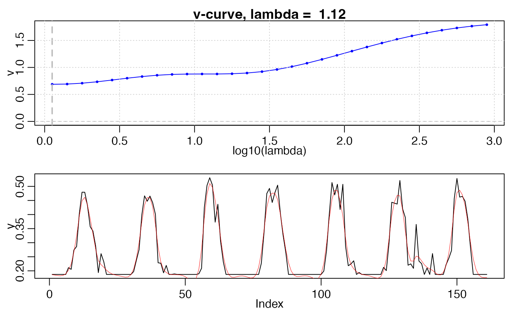

V-curve is used to optimize Whittaker parameter lambda. Update 20180605 add weights updating to whittaker lambda selecting
v_curve(INPUT, lg_lambdas, d = 2, IsPlot = FALSE, wFUN = wTSM, iters = 2)
| INPUT | A list object with the elements of |
|---|---|
| lg_lambdas |
|
| d | Difference order. |
| IsPlot | Boolean. Whether to plot figure? |
| wFUN | weights updating function, can be one of |
| iters | How many times curve fitting is implemented. |
data("CA_NS6"); d = CA_NS6 # global parameter IsPlot = TRUE nptperyear = 23 INPUT <- check_input(d$t, d$y, d$w, nptperyear, maxgap = nptperyear/4, alpha = 0.02, wmin = 0.2) # INPUT$y0 <- d$y # raw time-series, for visualization lg_lambdas <- seq(0, 3, 0.1) r <- v_curve(INPUT, lg_lambdas, d = 2, IsPlot = TRUE)